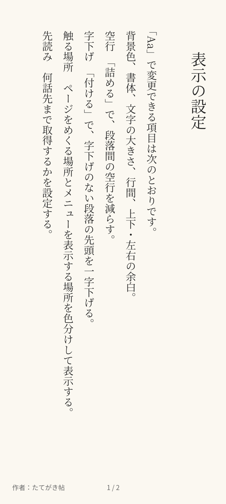
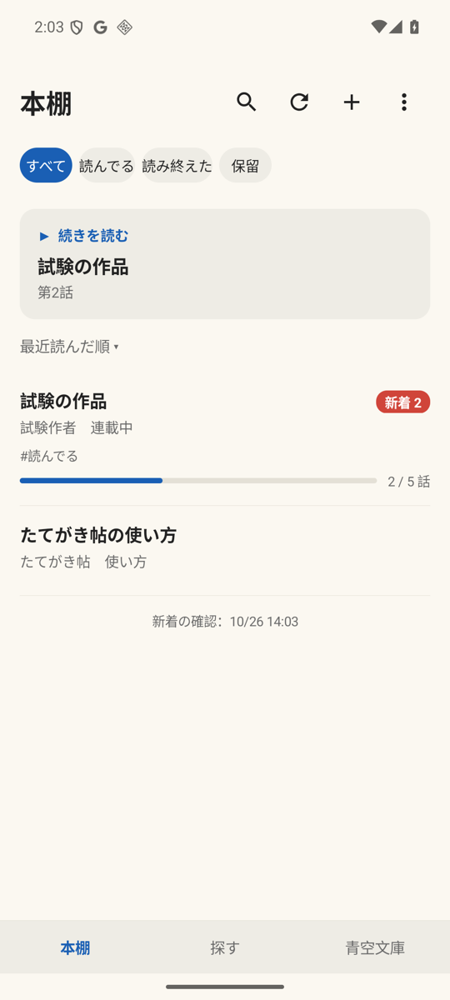
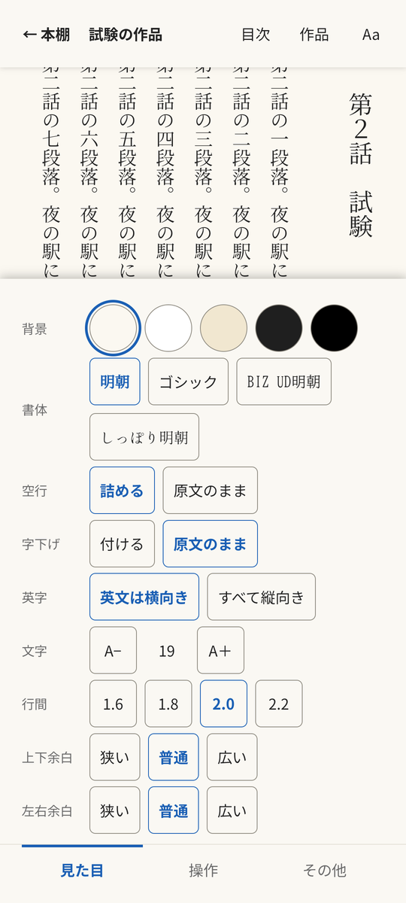
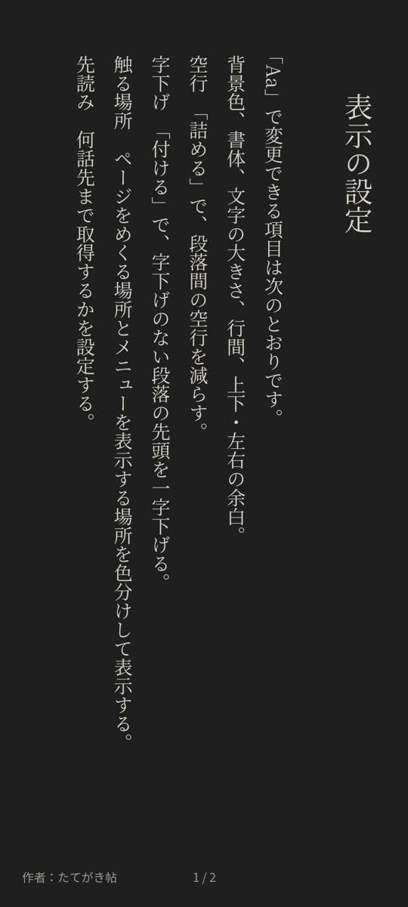
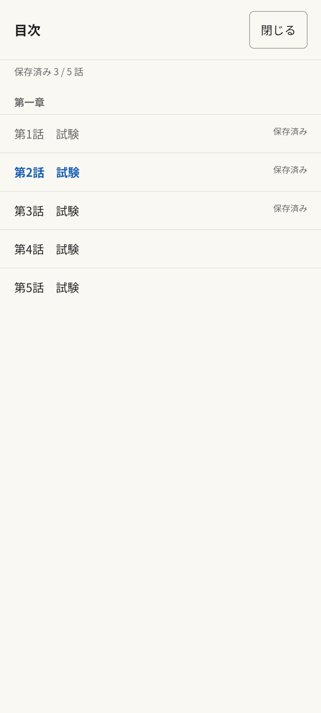
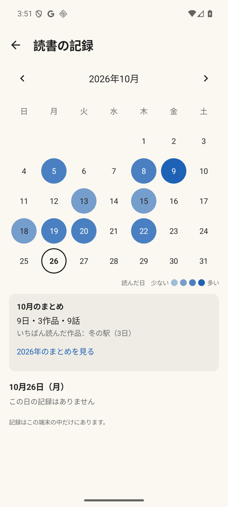
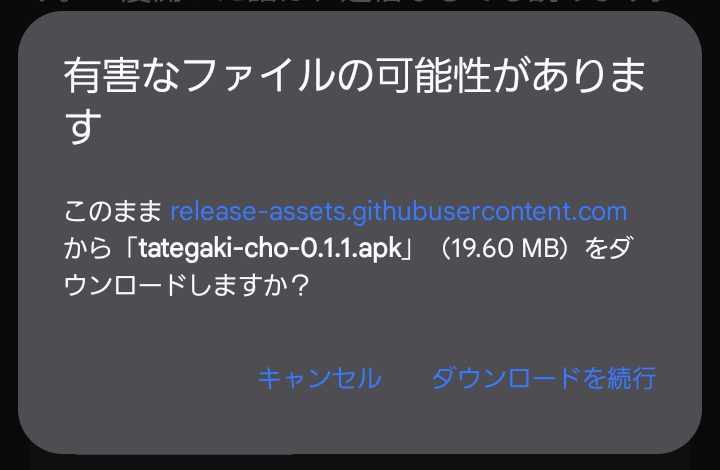

小説家になろう・カクヨム・青空文庫の作品を、縦書きで読むための Android アプリです。一度開いた話は、通信なしでも読めます。
Android 13 以上で使えます。
Google Play で公開される前の試用版です。インストールの手順を見ながら進めてください。
画面






できること
- ルビ、傍点、縦中横（2桁の数字を横に並べる表示）を、紙の本に近い形で表示します。
- 画面の左右をタップするか、スワイプすると、1画面ずつページをめくれます。
- 小説家になろうの作品は、作品名や作者名で検索したり、ランキングから探したりできます。カクヨムの作品は、ブラウザで作品を開き、「共有」からたてがき帖を選びます。青空文庫は、公式の作品一覧から探せます。
- 一度開いた話はアプリ内に保存され、通信なしで読めます。読んでいる話の続きを、1話・3話・5話・15話・20話先まであらかじめ保存することもできます。
- 本棚を開くと、新しい話が公開された作品に新着の話数が表示されます。
作品と作者のために
- 小説家になろうとカクヨムで本文を取得するのは、本棚に入れた作品のうち、読んでいる話とその続きだけです。続きは、先読みで選んだ話数分（最大20話）を取得します。1話ずつ、間隔を空けて取得します。青空文庫の作品は、1作品をまとめて取得します。
- 保存した本文は、このアプリ内でのみ読めます。テキストや電子書籍への書き出し機能はありません。
- 作者名と原作サイトへのリンクを、いつでも表示できます。感想や評価は原作サイトからどうぞ。
- 小説家になろうやカクヨムで作品が削除・非公開になると、1日以上あけて2回確かめたうえで、保存した本文もアプリから削除します。
インストールする
インストールには、アプリを配布するための「APK ファイル」を使います。
- スマホでこのページの「アプリをダウンロード」ボタンをタップして、APK ファイルをダウンロードします。以前のバージョンはダウンロードページ（Releases）にあります。
Chrome でこのアプリをダウンロードすると、「有害なファイルの可能性があります」と表示されることがあります。ダウンロードするかどうかを確かめるメッセージです。このページのボタンからダウンロードしていることを確かめて、「ダウンロードを続行」をタップしてください。

- ダウンロードした APK ファイルを開きます。「この提供元のアプリはインストールできません」と表示された場合は、次の操作をしてください。
- 設定を開きます。
- APK ファイルを開いたアプリ（Chrome など）の設定で、この提供元のアプリを許可をオンにします。
- 元の画面に戻り、APK ファイルをもう一度開きます。
- インストールをタップします。Play プロテクトが「不明なアプリ」と警告することがあります。その場合は、画面の案内に沿ってインストールを続けてください（詳細を開くと、続けるためのボタンが出ることがあります）。
インストールが終わったら、手順 2 でオンにしたこの提供元のアプリを許可は、オフに戻してかまいません。
アプリを更新する
新しいバージョンの APK ファイルを同じ手順でインストールすると、アプリが更新されます。本棚や読んでいた位置は、そのまま残ります。
更新するときは、アプリをアンインストールしないでください。 アンインストールすると、保存した本文も本棚も消えます。
アンインストールする
次のどちらかの方法で、アプリをアンインストールできます。
- ホーム画面またはアプリの一覧で、たてがき帖のアイコンを長押しします。アンインストールが表示されたらタップし、画面の案内に従います。
- 設定でアプリを開き、アプリの一覧からたてがき帖を選びます。アンインストールをタップし、画面の案内に従います。
アンインストールすると、本棚に入れた作品と読んだ位置、保存した本文、読書の記録、表示の設定がすべて消えます。
ダウンロードしたファイルを確認したいとき（詳しい方向け）
各バージョンのダウンロードページに、APK ファイルの SHA-256 を載せています。ダウンロードしたファイルから計算した値が同じなら、掲載されたものと同じファイルだと確かめられます。
困ったとき・気づいたことがあるとき
このアプリを紹介してくれた人に知らせてください。報告ページ（Issues）に書き込むこともできます。